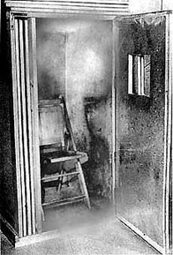

|
The Orgone Box Working in the early 1930s, distinguished Austrian psychoanalyst and medical doctor Wilhelm Reich invented an apparatus known as the Orgone Box, or Orgone Accumulator. Its function was to absorb orgone (his word for life force energy) out of the atmosphere. The outer layers of the box were made of organic material (apparently wood) while the inner layers were made of metal. The organic material allegedly attracted and absorbed the orgone, while the metal conducted it, transferring it to the inside of the box, where it would then accumulate, ready to be absorbed by a human occupant. Reich claimed that he could actually detect the accumulation of orgone within the box because the temperature inside the box became measurably warmer than the temperature in the outside room. There are still great shrieking debates over the validity of Reich’s claims for the orgone accumulator. Or more accurately, there is a great deal of angry shrieking on the part of Reich’s supporters who claim to have duplicated some of his experiments with positive results, while there is an equal amount of snide derision and smug pronouncements of quackery on the part of mainstream scientists who – in typical form — simply can’t be bothered to investigate something that they already “know” is wrong. In the meanwhile, to the outside observer two things do appear evident: First, Reich really did believe he had discovered the phenomenon he called “orgone”. The strength of his own conviction in what he was doing is demonstrated by the fact that he willingly sought to face down the United States Government (when he could have simply skipped town), and even insisted the judge in his case read his books detailing his work, as he was completely certain that this would clear things up. And second, whether Reich was right or wrong about the benefits of his box and the existence of orgone, he never really "proved" that his box was accumulating the stuff. One of his central proofs relied on the relative discharge rates of electroscopes positioned both inside and outside the orgone box. As Einstein himself tried to point out to Reich, these electroscopic experiments failed to eliminate other possible explanations for the resultant findings. (Reich should, for example, have compared his findings to readings taken within a closed, non-orgone absorbing box.) In other words, Reich might have been a brilliant theorist, but he was mediocre in the laboratory. Although Wilhelm Reich could potentially have gone on to acknowledge and correct these errors, coming to sounder scientific conclusions about the accumulator and even orgone itself, he never had the opportunity. The government burned his books, papers, and equipment and threw him in prison. He died there in 1957.
|